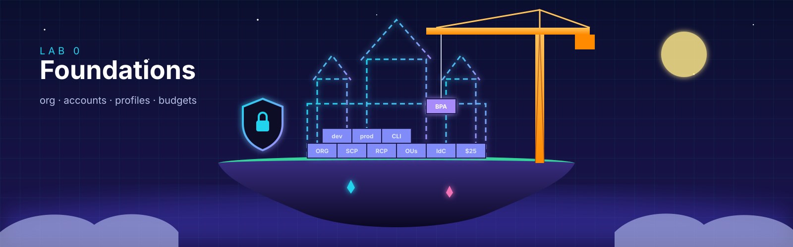
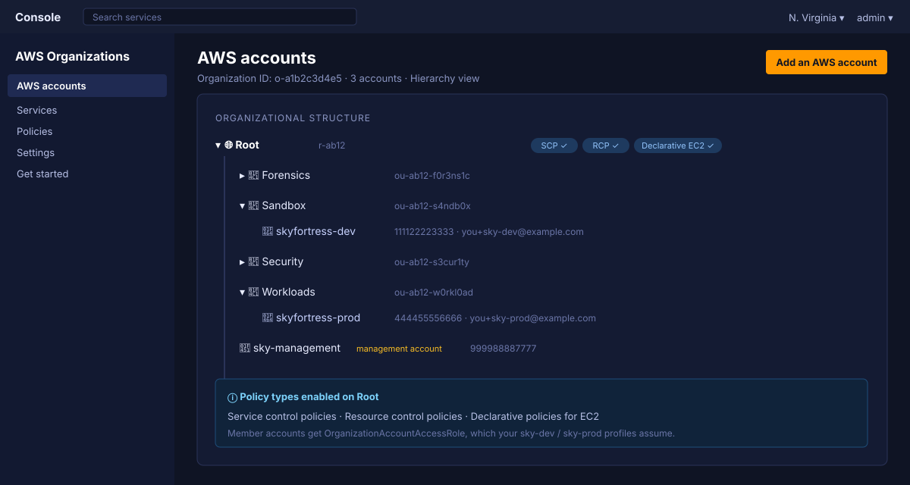

Foundations of the Fortress
Goal: a working multi-account sandbox you can reach from CloudShell with one-word profile names (--profile sky-dev), with spend alarms in place.
Run the provided scripts step by step. About 45 minutes, most of it spent waiting for accounts to be created.
Build it yourself with raw aws organizations calls or Terraform. Done when: verify.sh passes. That needs ALL features, SCP and RCP enabled, the profiles sky-mgmt / sky-dev / sky-prod, a budget named skyfortress-25, and the tools on your PATH.
Steps
- Create and harden the management account
Sign up for a new AWS account. Then, signed in as root:
- Register a passkey or security key as root MFA (IAM → Security credentials). AWS enforces root MFA, so do it now.
- Turn on IAM Identity Center in us-east-1. Create a user for yourself, a permission set from the
AdministratorAccessmanaged policy, and assign it to the management account. - Sign out of root and sign in via your Identity Center access portal URL. From now on, root goes back in the vault.
New in 2026New Identity Center organization instances offer a one-click multi-Region option, and you can make AWS account access management optional, which skips provisioning the service-linked role into member accounts. For this lab keep account access on, because we use it. On Day 1 we discuss when you'd turn it off.
- Open CloudShell in us-east-1
Click the terminal icon in the console's top bar. Confirm your identity and Region:
aws sts get-caller-identity echo $AWS_REGION # should print us-east-1 - Get the course materials
Clone this site's repository (your instructor will share the URL). Everything in
labs/is meant to run from CloudShell.git clone https://github.com/varoonsahgal/awsadvancedsecurity.git ~/skyfortress cd ~/skyfortress/labs/setup chmod +x *.sh - Install the toolbelt
CloudShell already has the AWS CLI v2, Python 3, git and jq. Add the rest (it persists in
$HOME, which has 1 GB):./install-tools.sh export PATH=$HOME/bin:$PATH - Bootstrap the organization
Pass a real email address you control. Member accounts use plus-addressing (
you+sky-dev@…), so every account gets a unique email that still lands in your inbox.# minimum (2 member accounts) ./bootstrap-org.sh you@example.com # realistic (adds security-tooling, log-archive, forensics) OPTIONAL_ACCOUNTS=true ./bootstrap-org.sh you@example.com source ~/.skyfortress.env$ ./bootstrap-org.sh you@example.com ▶ Creating organization (ALL features) — ignored if it already exists root: r-ab12 ▶ Enabling policy types: SCP, RCP, declarative (EC2) enabled SERVICE_CONTROL_POLICY enabled RESOURCE_CONTROL_POLICY enabled DECLARATIVE_POLICY_EC2 ▶ Creating OUs Security=ou-ab12-s3cur1ty Workloads=ou-ab12-w0rkl0ad Sandbox=ou-ab12-s4ndb0x Forensics=ou-ab12-f0r3ns1c ▶ Creating member accounts (2–4 min each) creating skyfortress-dev (car-5c1e…)… creating skyfortress-prod (car-9a4f…)… ▶ Creating SkyfortressAdmin role in the management account (backs the sky-mgmt profile) created ▶ Writing CloudShell profiles to ~/.aws/config ▶ Done. Run: source ~/.skyfortress.env && ./verify.sh
Expected output. IDs are examples; account creation is the slow part.
What is the script actually doing?
It calls
organizations create-organization --feature-set ALL, enables theSERVICE_CONTROL_POLICY,RESOURCE_CONTROL_POLICYandDECLARATIVE_POLICY_EC2policy types on the root, creates four OUs, creates accounts withcreate-account(pollingdescribe-create-account-status), and moves them into OUs. Each new account gets anOrganizationAccountAccessRolethat trusts the management account. Your CloudShell profiles assume it throughcredential_source = EcsContainer. The script also creates aSkyfortressAdminrole in the management account so thatsky-mgmtworks the same way. Day 1's guardrail SCPs exempt that role name. - Peek at what you made
Predict first: how many policy types are now enabled on the root? Then check:
aws organizations list-roots --query 'Roots[0].PolicyTypes' --output table aws organizations list-accounts --query 'Accounts[].[Name,Id,Status]' --output table aws sts get-caller-identity --profile sky-mgmt aws sts get-caller-identity --profile sky-devYou just ran
get-caller-identity --profile sky-devfrom the management account's CloudShell. Which account ID comes back, and what role name appears in the ARN?Reveal
The member account's ID, with
assumed-role/OrganizationAccountAccessRole/botocore-session-…. The profile tells the CLI to callsts:AssumeRolewith your CloudShell container credentials first. That role trusts the management account and hasAdministratorAccess, which is exactly why Day 1 talks about protecting it with SCPs.
SCREEN 0.1 What Organizations → AWS accounts should look like after the bootstrap. Illustrative mock-up; the live console layout may differ. Gotcha: a fresh org isn't emptyWhen you create a new organization from the Organizations console in some Regions, AWS now automatically attaches SCPs that prevent member accounts from leaving the organization or closing themselves (a July 2026 default). We used the CLI, so check
aws organizations list-policies --filter SERVICE_CONTROL_POLICYto see which policies you have. Day 1 builds a proper guardrail set. - Set budget alarms in every account
./budget.sh you@example.com # management ./budget.sh you@example.com sky-dev ./budget.sh you@example.com sky-prodConfirm the SNS email subscription if you're asked to. Budgets can take up to 24 hours to show spend, so don't rely on them alone.
nuke-check.shis your real-time safety net. - Enable Bedrock model access (for Day 4)
In
skyfortress-dev, open Amazon Bedrock → Model access and enable an Anthropic Claude model. Then list the inference profiles you can use:aws bedrock list-inference-profiles --profile sky-dev \ --query "inferenceProfileSummaries[?contains(inferenceProfileId,'anthropic')].inferenceProfileId" - Run the pre-flight check
./verify.sh$ ./verify.sh ▶ Skyfortress pre-flight ✅ Organization with ALL features ✅ SCP policy type enabled ✅ RCP policy type enabled ✅ sky-mgmt profile works ✅ Can assume into skyfortress-dev ✅ Can assume into skyfortress-prod ✅ Budget exists (management) ✅ terraform on PATH ✅ kubectl on PATH ✅ jq on PATH 🎉 All 10 checks passed. Your fortress foundations are laid. Flag: SKY{••••••••••••••••••••••••}
A passing run. The real flag prints where the dots are.
Every line shows ✅, and the script prints a flag. Paste it below.
Troubleshooting
| Symptom | Fix |
|---|---|
sky-mgmt check fails right after bootstrap | IAM is eventually consistent. Wait 15–30 seconds and re-run verify.sh. If it still fails, check that aws iam get-role --role-name SkyfortressAdmin works. |
create-account FAILED with EMAIL_ALREADY_EXISTS | That email is used by another AWS account. Use a different plus-suffix. |
ConstraintViolationException / account limit | New orgs start with a low account quota. Request an increase in Service Quotas (Organizations), or skip the optional accounts. |
Can't assume sky-dev right after creation | The new account takes a few minutes to become usable. Wait 2–3 minutes and retry. |
RESOURCE_CONTROL_POLICY won't enable | The org must have ALL features. Run aws organizations describe-organization and check that FeatureSet is ALL. |
| Tools vanished after a few months | CloudShell deletes $HOME after 120 days of inactivity. Re-run install-tools.sh. |
Re-create the same structure with Terraform's aws_organizations_organization, aws_organizations_organizational_unit and aws_organizations_account resources. Then think about why most teams use Control Tower or Account Factory for account vending instead of hand-rolling it.
Keep everything until the end of the course. Afterwards, close member accounts (they enter a 90-day post-closure period, and you can only close a limited share of accounts per 30 days), then close the management account:
aws organizations close-account --account-id $SKY_DEV
aws organizations close-account --account-id $SKY_PROD